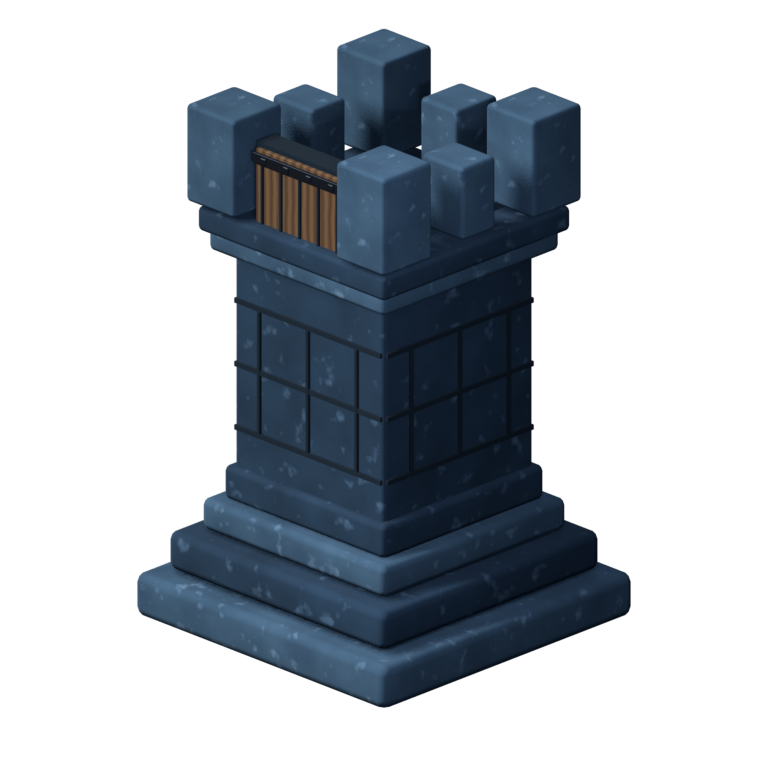
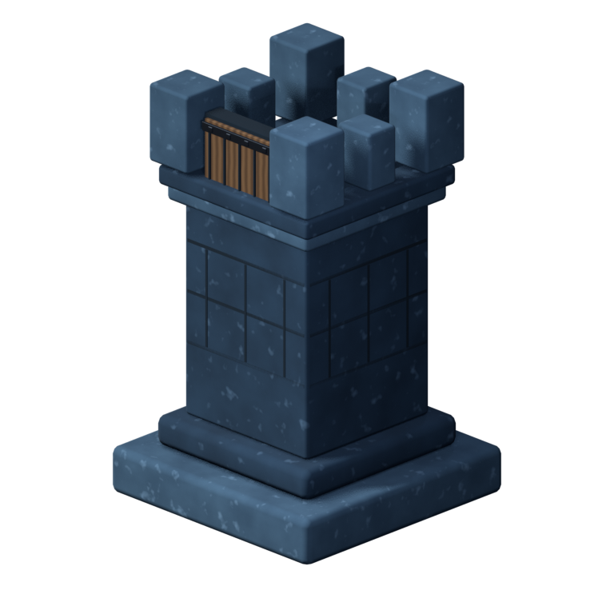
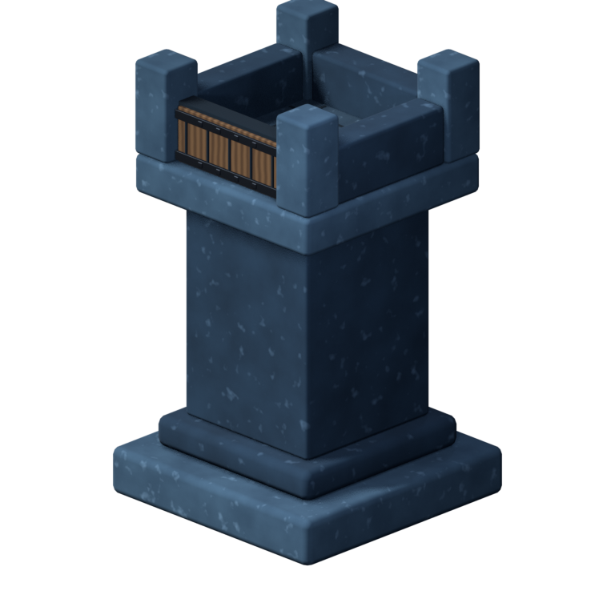
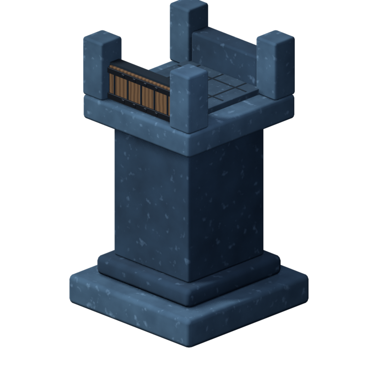
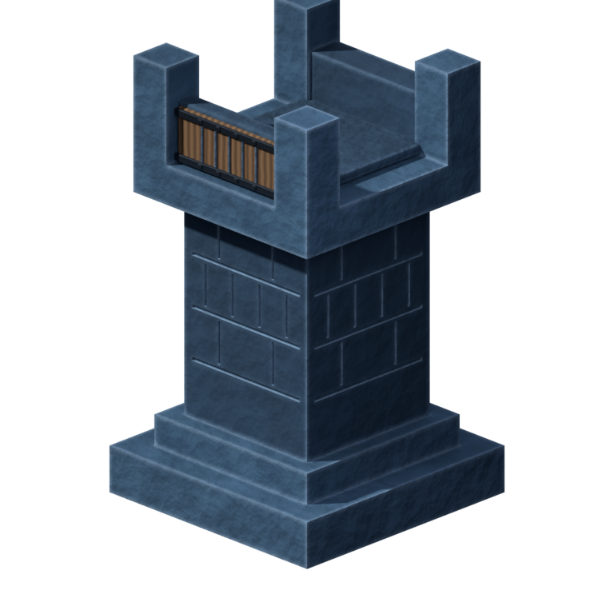
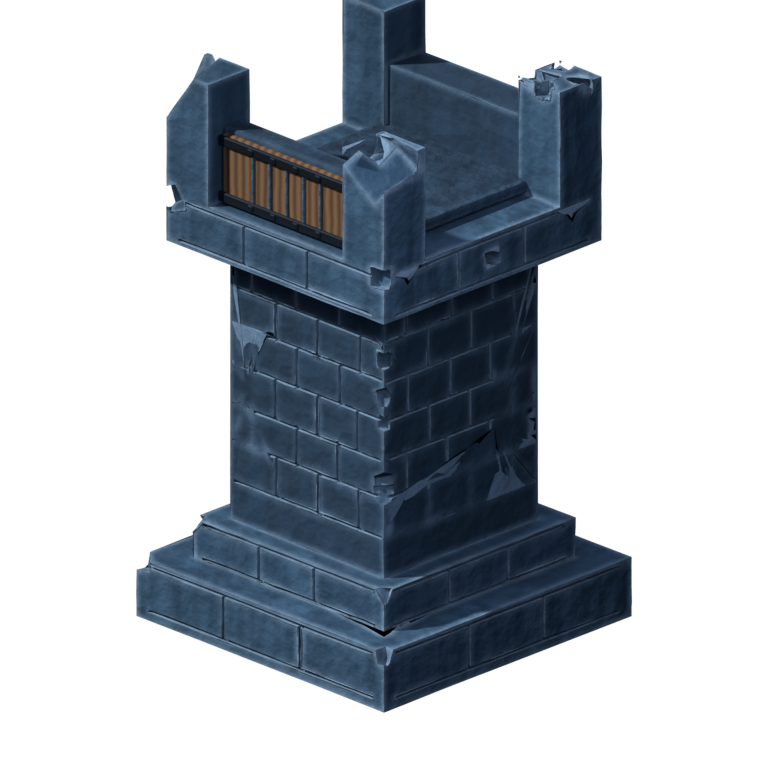
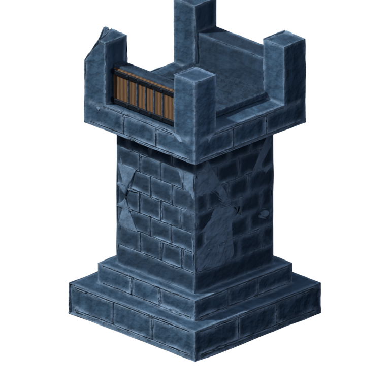

Rook candidate units
Seven tentative rook units, one per render. Each is its own standalone thing —
own folder, sprite, .blend fallback, and unit.json. None of them touch the
production rook at frontend/public/assets/units/rook; they are candidates for review, not wired into the app.

Old Keep
Classic stacked four-tier base, merlon battlements, vertical plank gate.
rook-old-keep · from v1-first-pass

Sentinel
Pared-down two-step base; merlon top; cleaner silhouette.
rook-sentinel · from v2-simple-base

Bastion
Cantilevered battlement box overhanging the shaft; four closed walls.
rook-bastion · from v3-overhang-top

Gatewatch
Open side notches, gate-front and rear wall; facing reads at a glance.
rook-gatewatch · from v4-open-sides

Masonkeep
One carved stone mass: AO cavity grime, worn light edges, subtle seams.
rook-masonkeep · from v5-carved-stone

Breachhold
Running-bond ashlar with four distinct per-pillar battle failures.
rook-breachhold · from v6-masonry-varied-damage

Ruinwall
Rough-hewn rock surface with a single sheared corner pillar.
rook-ruinwall · from v7-rough-rock-one-shear
{kind=link}
{kind=link}
{kind=link}
{kind=link}
{kind=link}
{kind=link}
{kind=link}